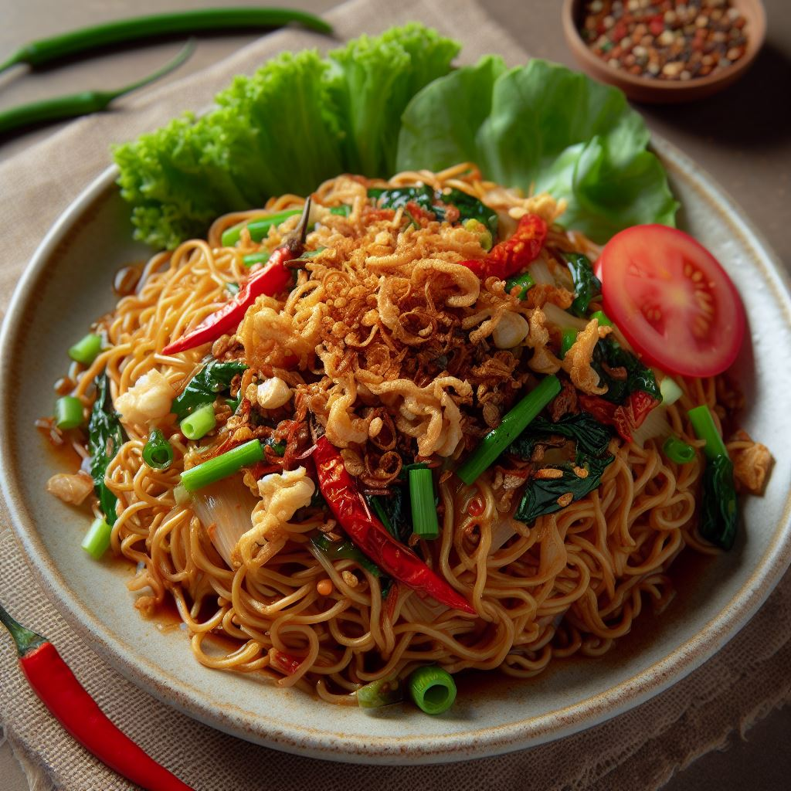
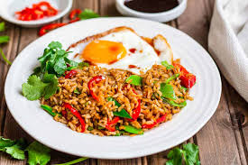
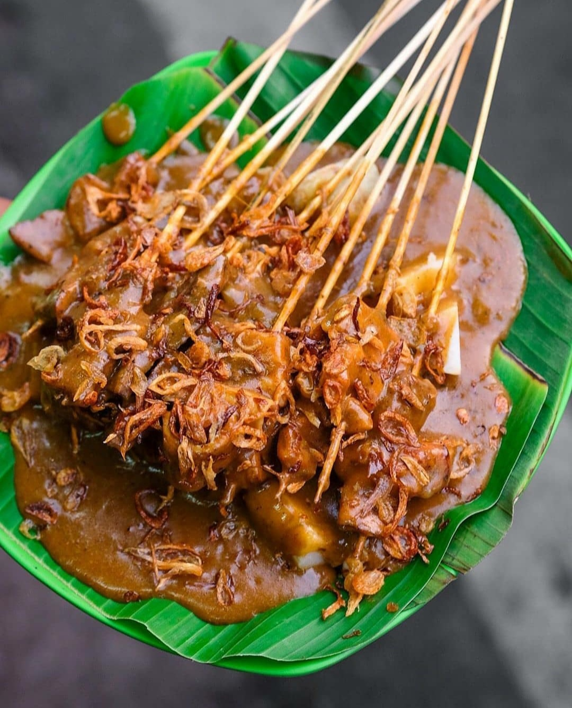

Most Popular Foods
by Foodie Addict, September 2024
#2 Mie Goreng
Indonesian stir-fried noodles,
often prepared
with sweet soy sauce, garlic, shallots,
vegetables,
and a choice of chicken, beef, or shrimp.
Sweet
and savory with a smoky undertone
from the wok
cooking.
Price Range: IDR 15 - 30K
#1 Nasi Goreng
Indonesia’s famous fried rice dish, often cooked
with
sweet soy sauce, garlic, shallots, chili,
and typically served with a fried egg on top.
Price Range: IDR 10 - 25K
#3 Sate Padang
Grilled skewers of marinated meat, can be
made from chicken, beef, lamb, or goat,
and
sometimes includes intestines or other offals.
Price Range: IDR 15 - 25K